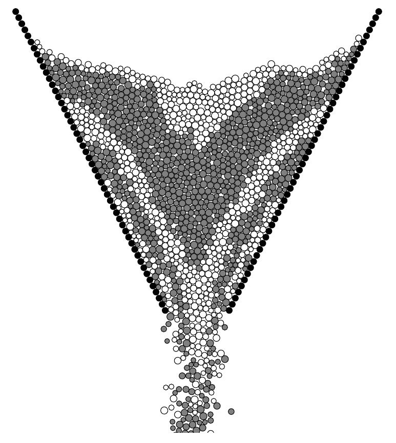
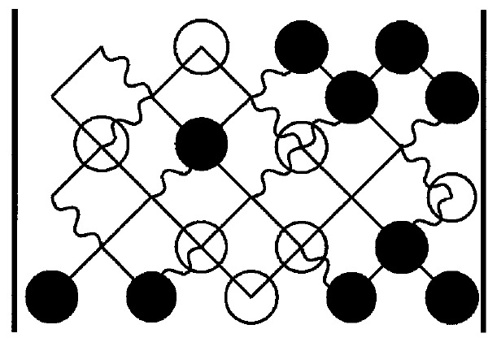

Mecánica de Materiales Granulares
Modelos y simulaciones
Unidad 9 • Geofísica de Medios Granulares
- Ecuaciones de movimiento (DEM)
- Condiciones de borde e iniciales
- Modelos de contacto para esferas
- Fuerzas normales y tangenciales
- Duración de colisiones
- Integración numérica y caos
Thomas Gallot • Manuel Carlevaro (CONICET–IFLYSIB, UTN FRLP)
¿Por qué son necesarias las simulaciones computacionales?
- Proveen información no accesible experimentalmente.
- Ayudan a comprender fenómenos.
- Permiten predecir el comportamiento de un sistema granular.
- Ayudan a optimizar procesos.
Simulaciones y modelos
Pöschel, et.al simuladores (2008); Chalmers, Qué es esa cosa llamada ciencia (2010)
Línea de tiempo
MC
MD
GD
CD
«soft sphere»
DEM
DEM-CFD
Ver Thornton, Granular Dynamics, Contact Mechanics and Particle System simulations (2015), capítulo 1
Núcleo del método
Ecuaciones de movimiento:
\( (j = 1, \ldots, N) \)
Interacción a pares:
Tres instancias:
- Sumas de fuerzas y torques según (2)
- Integración de las ecuaciones de movimiento (1)
- Extracción de datos a partir de la trayectoria obtenida
Más:
- Condiciones iniciales
- Condiciones de borde
Condiciones de borde

Pöschel y Schwager, Computational granular dynamics: models and algorithms (2005).

← Pared con granos
- Igual interacción que con los granos del sistema
- No es necesario definir fuerzas extras
- Dinámica no determinada por las ecuaciones de movimiento (1)
Definición de superficies
- Suman propiedades materiales
- Definición de modelos de fuerza
- Dinámica no determinada por las ecuaciones de movimiento (1)
← Condiciones periódicas
- Simulan sistemas infinitos
- Tamaño suficiente para evitar artefactos
Condiciones iniciales
Para \( i = 1, \ldots, N \):
- \( \mathbf{r}_i(t=0) \)
- \( \mathbf{v}_i(t=0) \)
- \( \boldsymbol{\phi}_i(t=0) \) (no en esferas)
- \( \boldsymbol{\omega}_i(t=0) \)
Para esquemas de integración predictor-corrector:
- \( \mathbf{r}_i^{(n)}(t=0) \)
- \( \boldsymbol{\phi}_i^{(n)}(t=0) \)
para \( n = 2, 3, \ldots \)
Posiciones iniciales:
- En un reticulado
- Empaquetamiento aleatorio
Relajación:
- Parámetros no reales
- No se usan para obtener resultados
- Problemas para altos factores de empaquetamiento
Modelos para granos esféricos
Compresión mutua de granos \(i\) y \(j\)
\( \xi_{ij} = R_i - R_j - |\mathbf{r}_i - \mathbf{r}_j| \)
Fuerza entre granos en contacto:
En 2D:
Fuerzas normales
Linear dashpot
Coeficiente de restitución:
\(\varepsilon = \text{const}\) no cumple teoría de cuerpos viscosos
Esferas viscoelásticas (Hertz 1882)
con \( \dfrac{1}{R^{\text{eff}}} = \dfrac{1}{R_i} + \dfrac{1}{R_j} \)
Si los granos son de materiales diferentes:
Duración de colisiones

Secuencia de una colisión binaria: aproximación, compresión máxima, separación. La fuerza \(F\) puede ser negativa durante la fase de separación para el modelo viscoelástico.
Fuerzas tangenciales
Velocidad relativa al contacto
\( v_{\text{rel}}^t = (\mathbf{v}_j - \mathbf{v}_i) \cdot \mathbf{e}_{ij}^t + R_i\omega_i + R_j\omega_j \)
Modelo de Haff y Werner
No se puede medir \(\gamma^t\), se compara a posteriori
Modelo de Cundall y Strack
donde \( \zeta(t) = \displaystyle\int_{t_c}^{t} v_{\text{rel}}^t \, dt' \)
Se determina \(\kappa^t\) comparando simulaciones con experimentos
Integración de las ecuaciones de movimiento
Propiedades deseadas del integrador:
- Rápido, poco uso de memoria
- Permitir largos \(\delta t\)
- Duplicar la trayectoria clásica lo más próximo posible
- Conservar la cantidad de movimiento
- Forma simple y fácil de programar
\(\uparrow \delta t \rightarrow \downarrow\) pasos para completar una simulación
\(\uparrow \delta t \rightarrow \downarrow\) precisión de la trayectoria
Exponente de Lyapunov > 0

Allen y Tildesley, Computer Simulation of Liquids (2017)
Bibliografía
- P.A. Cundall. «A computer model for simulating progressive large scale movements in blocky rock systems». Proc. Symp. Int. Soc. Rock Mech. (1971).
- P.A. Cundall y O.D.L. Strack. «A discrete numerical model for granular assemblies». Géotechnique 29.1 (1979), págs. 47–65.
- T. Pöschel y T. Schwager. Computational Granular Dynamics: Models and Algorithms. Springer (2005).
- C. Thornton. Granular Dynamics, Contact Mechanics and Particle System Simulations. Springer (2015).
- M.P. Allen y D.J. Tildesley. Computer Simulation of Liquids. Oxford University Press, 2ª ed. (2017).
- P.K. Haff y B.T. Werner. «Computer simulation of the mechanical sorting of grains». Powder Technology 48.3 (1986), págs. 239–245.